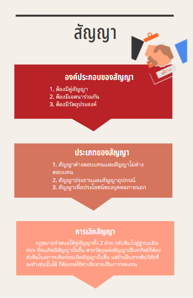
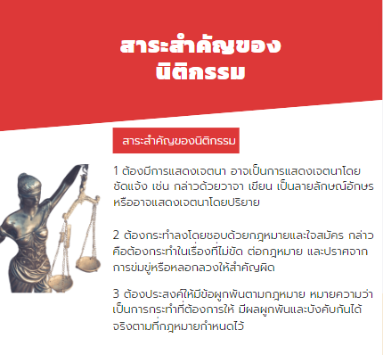
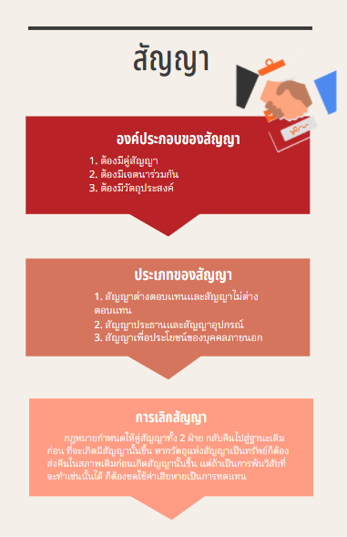
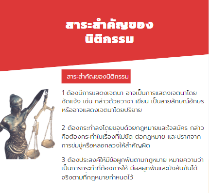

นิติกรรม
นิติกรรม หมายถึงการใดๆ อันทำลงโดยชอบด้วยกฎหมายและด้วยใจสมัคร มุ่งโดยตรงต่อ การผูกนิติสัมพันธ์ขึ้นระหว่างบุคคล เพื่อก่อให้เกิดการเปลี่ยนแปลงเคลื่อนไหวในสิทธิที่มีอยู่เดิม (ประมวล กฎหมายแพ่งและพาณิชย์ มาตรา 149)3.1 สาระสำคัญของนิติกรรม
หลักเกณฑ์อันเป็นสาระสำคัญของนิติกรรม มีดังต่อไปนี้3.1.1 ต้องมีการแสดงเจตนา อาจเป็นการแสดงเจตนาโดยชัดแจ้ง เช่น กล่าวด้วยวาจา เขียน เป็นลายลักษณ์อักษร หรืออาจแสดงเจตนาโดย
3.1.2 ต้องกระทำลงโดยชอบด้วยกฎหมายและใจสมัคร กล่าวคือต้องกระทำในเรื่องที่ไม่ขัด ต่อกฎหมาย และปราศจากการข่มขู่หรือหลอกลวงให้สำคัญผิด
3.1.3 ต้องประสงค์ให้มีข้อผูกพันตามกฎหมาย หมายความว่า เป็นการกระทำที่ต้องการให้ มีผลผูกพันและบังคับกันได้จริงตามที่กฎหมายกำหนดไว้
3.2 แบบแห่งนิติกรรม
แบบแห่งนิติกรรม หมายถึงหลักเกณฑ์ที่กฎหมายกำหนดไว้เป็นพิเศษ ผู้ทำนิติกรรมต้อง ปฏิบัติตามอย่างเคร่งครัดครบถ้วน ได้แก่3.2.1 นิติกรรมที่ต้องทำเป็นหนังสือ หมายถึงนิติกรรมที่ต้องมีการบันทึกข้อตกลงไว้เป็น ลายลักษณ์อักษร ลงลายมือชื่อผู้เกี่ยวข้องไว้ทั้งหมด
3.2.2 นิติกรรมที่ต้องทำเป็นหนังสือต่อพนักงานเจ้าหน้าที่ หมายถึงนิติกรรมที่กฎหมาย กำหนดให้บันทึกไว้ต่อหน้าเจ้าหน้าที่โดยตรง
3.2.3 นิติกรรมที่ต้องจดทะเบียนต่อพนักงานเจ้าหน้าที่ หมายถึงนิติกรรมที่ผู้ทำต้องไปยื่น ขอจดทะเบียนต่อพนักงานเจ้าหน้าที่โดยตรง
3.2.4 นิติกรรมที่ต้องทำเป็นหนังสือและจดทะเบียนต่อพนักงานเจ้าหน้าที่ หมายถึงนิติกรรม ที่นอกจากจะต้องทําเป็นหนังสือแล้ว ยังต้องนำไปจดทะเบียนต่อพนักงานเจ้าหน้าที่ด้วย
3.3 ความไม่สมบูรณ์แห่งนิติกรรม
นิติกรรมที่ทำขึ้นไม่ถูกต้อง ย่อมมีผลทำให้นิติกรรมนั้นไม่สมบูรณ์ ดังต่อไปนี้3.3.1 นิติกรรมที่เป็นโมฆะ หมายถึงนิติกรรมนั้นไม่มีผลบังคับตามกฎหมาย เสมือนหนึ่งว่า ไม่มีการทำนิติกรรมดังกล่าวมาก่อนเลย
3.3.2 นิติกรรมที่เป็นโมฆียะ หมายถึงนิติกรรมนั้นมีความบกพร่องแต่ยังสมบูรณ์อยู่จนกว่า จะมีการบอกล้าง
4.สัญญา
สัญญาเป็นนิติกรรมอย่างหนึ่ง ซึ่งเกิดขึ้นจากการที่บุคคล 2 ฝ่ายขึ้นไปตกลงกันก่อให้เกิดผลผูกพัน ตามกฎหมายขึ้น4.1 องค์ประกอบของสัญญา
องค์ประกอบอันเป็นสาระสำคัญที่จะก่อให้เกิดสัญญาขึ้น มีดังต่อไปนี้4.1.1 ต้องมีคู่สัญญา หมายถึงสัญญาจะเกิดขึ้นได้ต้องมีบุคคลตั้งแต่ 2 ฝ่ายขึ้นไป แต่ละฝ่าย อาจมีเพียงบุคคลเดียวหรือหลายคนร่วมกันก็ได้
4.1.2 ต้องมีเจตนาร่วมกัน หมายถึงบุคคลทั้ง 2 ฝ่ายจะต้องแสดงเจตนาตรงกัน ทั้งใน คำเสนอของฝ่ายหนึ่งและคำสนองของอีกฝ่ายหนึ่ง
4.1.3 ต้องมีวัตถุประสงค์ หมายถึงการที่บุคคลเข้ามาตกลงร่วมกัน ต้องมีวัตถุประสงค์
4.2 ประเภทของสัญญา
สัญญาอาจแบ่งได้หลายประเภท แต่ที่เป็นสาระสำคัญและเป็นแนวทางที่จะศึกษาหน่วย การเรียนรู้ในลำดับถัดไปมีดังนี้ 4.2.1 สัญญาต่างตอบแทนและสัญญาไม่ต่างตอบแทน1) สัญญาต่างตอบแทน หมายถึงสัญญาที่คู่สัญญาทั้ง 2 ฝ่ายต่างก็มีหน้าที่ต้องปฏิบัติ ต่ออีกฝ่ายหนึ่งตามข้อตกลงในสัญญา
2) สัญญาไม่ต่างตอบแทน หมายถึงสัญญาที่คู่สัญญาเพียงฝ่ายเดียวมีหน้าที่ต้อง ปฏิบัติต่อคู่สัญญาอีกฝ่ายหนึ่ง
4.2.2 สัญญาประธานและสัญญาอุปกรณ์
1) สัญญาประธาน หมายถึงสัญญาที่มีความสมบูรณ์ในตัวเอง
2) สัญญาอุปกรณ์ หมายถึงสัญญาที่จะเกิดขึ้นได้ต้องอาศัยอิงกับสัญญาประธานเสมอ ถ้าไม่มีสัญญาประธาน สัญญาอุปกรณ์ที่เกิดขึ้นไม่ได้ หรือถ้าสัญญาประธานไม่สมบูรณ์ สัญญาอุปกรณ์ ย่อมไม่สมบูรณ์ไปด้วย
4.2.3 สัญญาเพื่อประโยชน์ของบุคคลภายนอก หมายถึงวัตถุประสงค์ในการทำสัญญากำหนด ให้มีผลผูกพันบุคคลภายนอกได้แม้บุคคลดังกล่าวจะไม่เข้ามาเป็นคู่สัญญา
4.3 การเลิกสัญญา
เมื่อมีการบอกเลิกสัญญา กฎหมายกำหนดให้คู่สัญญาทั้ง 2 ฝ่าย กลับคืนไปสู่ฐานะเดิมก่อน ที่จะเกิดมีสัญญานั้นขึ้น หากวัตถุแห่งสัญญาเป็นทรัพย์ก็ต้องส่งคืนในสภาพเดิมก่อนเกิดสัญญานั้นขึ้น แต่ถ้าเป็นการพ้นวิสัยที่จะทำเช่นนั้นได้ ก็ต้องชดใช้ค่าเสียหายเป็นการทดแทน 


